Q1 · FortiGate
Both IPsec members show IKE up, but only one can be added to the aggregate. Which check best follows today's lesson?
Correct: A. Tunnel health and aggregate membership are separate states.
This same-day replacement keeps the original September 5 feature set, removes Mermaid entirely, references committed SVG diagrams with editable draw.io sources, substantially expands the engineering content, and adds implementation plus expected-state material.
Where Fortinet publishes CLI syntax, this report includes it. Where a feature is documented primarily as a GUI/API workflow, the report explicitly says so and shows the supported workflow plus the expected operational state instead of fabricating shell commands. Runtime counters, SPIs, session IDs, parser rows, user names, and other transaction-specific values are not hard-coded as fake canonical output.
An IPsec aggregate groups multiple route-based IPsec tunnels behind one logical FortiOS interface. The individual Phase 1/Phase 2 tunnels continue to negotiate and maintain security associations independently, but policy, routing, and optionally a dynamic routing adjacency can point at the aggregate instead of at each underlay-specific tunnel. This makes the aggregate a forwarding abstraction: the aggregate decides which eligible member carries a new flow, while the member tunnel remains responsible for encryption and peer reachability.
Each member must be compatible with aggregate operation. Fortinet’s example enables aggregate-member on the Phase 1 interface and disables net-device, then creates a config system ipsec-aggregate object referencing the member names. The two members should be operationally interchangeable: selectors, proposals, remote-side policy, MTU/MSS behavior, and reachable protected prefixes must align. If one member negotiates but cannot carry the same traffic, distributing a flow to it creates an intermittent failure that looks like load-balancing instability even though the aggregate algorithm is doing exactly what it was configured to do.
Distribution is flow-based. Round-robin rotates successive flows, L3/L4 methods derive a choice from header information, weighted round-robin lets one member receive a larger share, and redundant mode is appropriate when the objective is primary/backup rather than simultaneous use. A flow is not sprayed packet-by-packet across the members; that distinction matters for ordering and for stateful devices beyond the FortiGate.
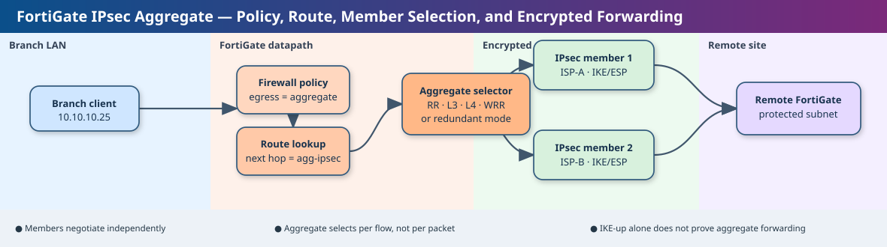
config vpn ipsec phase1-interface
edit "pri_HQ1"
set interface "wan1"
set net-device disable
set aggregate-member enable
set remote-gw 203.0.113.10
set proposal aes256-sha256
next
edit "sec_HQ1"
set interface "wan2"
set net-device disable
set aggregate-member enable
set remote-gw 203.0.113.20
set proposal aes256-sha256
next
end
config system ipsec-aggregate
edit "agg_HQ1"
set member "pri_HQ1" "sec_HQ1"
set algorithm weighted-round-robin
next
endshow vpn ipsec phase1-interface show system ipsec-aggregate get vpn ipsec tunnel summary
net-device disable and aggregate-member enable; the aggregate lists both member names; tunnel summary shows the member tunnels established. SA counters, peer IDs, SPIs, byte counts, and timers vary by session and should not be treated as fixed expected text.| Observation | What this proves | What it does not prove |
|---|---|---|
| Both member tunnels are IKE/IPsec up. | Underlay reachability and tunnel negotiation are working for both members. | It does not prove both tunnels are valid aggregate members or carry identical protected traffic. |
| The aggregate object contains both members and traffic counters rise on both. | The aggregate is selecting and using both members for actual flows. | It does not prove return-path symmetry elsewhere in the network. |
Two VPNs are healthy, but the GUI refuses to add the second one to the aggregate. The support case shows that the object name itself can be the differentiator: a tunnel name containing spaces can trigger a GUI/API encoding problem even though the tunnel is otherwise valid. The right discriminating check is therefore not another IKE debug. Compare the member definitions and names, test a safe object name or CLI reference, then verify aggregate membership and real flow distribution. Once the member joins successfully, move on to policy, routing, and failure testing.
Use redundant mode when predictable primary/backup behavior matters more than bandwidth aggregation. Use weighted distribution only when the two paths are operationally interchangeable. If OSPF or BGP runs across the aggregate, test adjacency continuity while each member is failed and restored. If the aggregate is later placed into SD-WAN, remember that SD-WAN selects the aggregate as a logical member while the aggregate performs its own internal selection. That creates two selection layers and must be documented clearly.
Workflow mode changes an ADOM from direct editing into a governed change system. The key operational object is the workflow session. An ADOM lock only reserves the right to edit; the session is the container that records the policy/object delta and moves through save, submit, approval, rejection, repair, discard, and eventual installation. Confusing the lock with the session is one of the most common workflow-state mistakes.
FortiManager must have workflow approvals configured for the ADOM before administrators can start governed sessions. Once workflow mode is active, Policy & Objects and related management areas remain read-only until the ADOM is locked and a session is started. The administrator edits inside that session, then either discards it, saves it for later, or submits it. A saved session blocks creation of a new session until it is submitted or discarded. Submitted sessions must be approved in creation order, so an older pending change can become an operational dependency for later work.
Approval is management-plane state, not FortiGate runtime state. A rejected session does not mean device connectivity failed; it means the proposed change was not authorized. Likewise, an approved session is not proof the resulting policy has been installed successfully until the install task and managed-device state are verified.
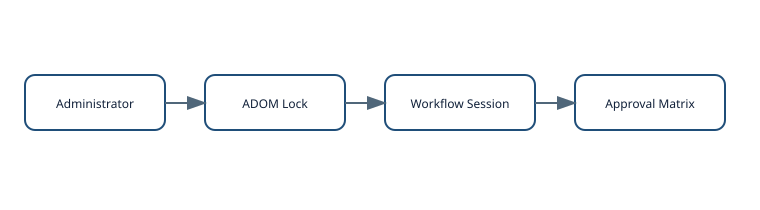
config system global
set workspace-mode workflow
end
get system workflow approval-matrix <ADOM_NAME>The global CLI enables the workflow workspace mode. The approval matrix itself is normally built in the FortiManager GUI for the target ADOM, while get system workflow approval-matrix is useful for confirming the configured matrix information.
show system global reports workspace-mode workflow. The workflow approval-matrix query returns the configured ADOM approval information. In the GUI, an unlocked ADOM is read-only; after lock but before starting a session, governed editing/import functions can still remain unavailable; after a workflow session starts, policy/object changes can be made inside that session.| Evidence | Proves | Does not prove |
|---|---|---|
| ADOM shows locked by the administrator. | Edit ownership is established. | A workflow session exists. |
| Session appears as submitted and approved. | The change passed the configured review state. | The policy package has been installed successfully to every managed FortiGate. |
An administrator enables workflow mode, locks the ADOM, then finds Import Policy still greyed out. Managed-device connectivity is normal and the lock is visible. The missing state is a started workflow session. The import itself is a policy change and must belong to a governed session. Starting the workflow session makes the operation available. This is a useful example of why FortiManager troubleshooting must identify the exact management state rather than treating every unavailable button as a permissions or connectivity problem.
Keep sessions intentionally scoped. A session that mixes unrelated policy cleanup, VPN changes, and object renaming is difficult to review and risky to repair after rejection. Avoid leaving a session saved for long periods because it serializes later work. Approval groups should reflect separation-of-duties policy, but operational governance must also account for FortiManager permissions because suitable administrators may be able to approve their own workflow sessions. Before upgrades, record pending sessions and preserve FortiManager backups so maintenance does not obscure change state.
Event handlers transform eligible Analytics logs into actionable events. The detection model is composed of reusable data selectors, handler rules, optional notification profiles, optional incident creation, and optional automation stitches. The most important prerequisite is often overlooked: handlers evaluate Analytics logs, not Archive-only logs. A raw record being searchable somewhere on FortiAnalyzer therefore does not automatically make it usable as event-handler input.
Basic event handlers generate an event when any configured rule matches; Fortinet documents the rules as OR-related. Correlation event handlers can combine rules with operators such as AND, AND_NOT, OR, FOLLOWED_BY, and NOT_FOLLOWED_BY. Data selectors determine which devices, subnets and log filters are eligible. Notification profiles determine where an event notification is sent. Generated events appear in Event Monitor and can be grouped into incidents or passed to an Automation Stitch.
ADOM context matters. When ADOMs are enabled, handlers and events are ADOM-specific. In Analyzer/Collector deployments, the Analyzer evaluates handlers. That means a detection can be logically correct yet still produce nothing if the relevant logs are stored only as Archive data, belong to another ADOM, or never pass the selected data selector.
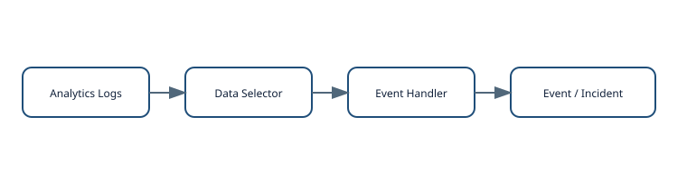
GUI: Incidents & Events > Event Handlers 1. Create or select a Data Selector. 2. Create a Basic or Correlation handler. 3. Add rule logic and choose notification / Automation Stitch behavior. 4. Enable the handler. 5. Optionally enable automatic incident creation. For portable configuration: More > Export > Select Export Data Type: CLI FortiAnalyzer produces a .CONF representation for import/deployment.
| Observation | Proves | Does not prove |
|---|---|---|
| A matching log is visible in Archive. | The device sent historical data and FortiAnalyzer retained it. | The handler engine can evaluate it. |
| A new event appears when a controlled matching log is generated. | Data eligibility, selector scope and rule logic succeeded for that transaction. | Suppression/grouping is tuned correctly for production volume. |
A SOC enables a custom exploit handler but sees no events. Before rewriting the filter, verify that the required IPS/AV/application logs are arriving as Analytics logs in the correct ADOM and that the selector includes the source device. Old Archive matches are not enough. Once the input path is proven, test a known match and then tune suppression or correlation if the event rate is excessive.
Use reusable selectors rather than repeating near-identical device filters across dozens of handlers. Decide incident grouping deliberately so unrelated activity is not merged and one attack is not fragmented into dozens of incidents. Clone predefined handlers when you need a similar immutable handler type but editable logic. After changing log-storage policy or Analyzer/Collector roles, include key event-handler tests in the change plan because the data eligibility boundary can move without any visible change to the handler itself.
A private VLAN partitions one primary VLAN into restricted Layer-2 subdomains while keeping the existing IP subnet and Layer-3 gateway. It is therefore a bridging isolation mechanism rather than a routing segmentation mechanism. The gateway can remain reachable while host-to-host forwarding is selectively blocked or allowed according to isolated/community semantics.
The primary VLAN anchors the subnet. A promiscuous port normally connects to a firewall, router or shared service and can communicate with the secondary populations. An isolated secondary VLAN permits hosts to reach promiscuous ports but prevents isolated hosts from reaching each other or other secondary VLANs. Only one isolated VLAN is allowed in a PVLAN domain. Community VLANs permit communication among members of the same community and with promiscuous ports, but not with other communities or isolated hosts.
Because this behavior is implemented in switching logic, model support matters. FortiLink management does not create a forwarding capability that the hardware/software platform lacks. That is why PVLAN must be validated in the feature matrix for every switch model participating in the path.
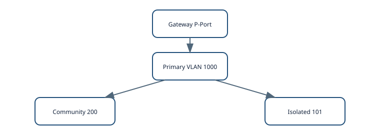
config switch vlan
edit 1000
set private-vlan enable
set isolated-vlan 101
set community-vlans 200-210
next
end
config switch interface
edit "port2"
set private-vlan promiscuous
set primary-vlan 1000
next
edit "port3"
set private-vlan sub-vlan
set primary-vlan 1000
set sub-vlan 200
next
edit "port7"
set private-vlan sub-vlan
set primary-vlan 1000
set sub-vlan 101
next
endshow switch vlan 1000 show switch interface port2 show switch interface port3 show switch interface port7
A design is validated on a larger FortiSwitch, then fails at an access switch because that model does not expose PVLAN. Moving the switch under FortiGate/FortiLink management does not change the platform's feature support. The real engineering choice is to replace the access switch with a supported model or use a different isolation primitive and test whether its forwarding behavior truly matches the application requirement.
PVLAN is useful for guest, IoT, hosting and shared-subnet designs where endpoints need the same gateway but should not bridge freely. It is not equivalent to routed segmentation: if each population requires different firewall policy, DHCP scope, route control or broadcast containment, separate VLANs/subnets are often cleaner. Document every promiscuous assignment because an accidentally promiscuous host port can defeat the intended isolation.
Roaming is a client decision supported by network information and fast-transition mechanisms. 802.11k, 802.11v and 802.11r solve different pieces of the problem. 802.11k helps the station discover candidate APs, 802.11v can influence the client's AP choice, and 802.11r reduces the authentication work during the handoff. Enabling only 802.11r does not make a sticky client decide to roam earlier.
With 802.11k enabled, the WLAN can provide neighboring AP/site information so a capable client avoids scanning every possible channel. With 802.11v, the infrastructure can send BSS transition information and help move clients away from a congested AP when a better candidate exists. With Fast BSS Transition, the client can reduce security-handshake latency as it moves to the new BSS. RF overlap, transmit power, channel design and client firmware still determine whether the endpoint sees a useful target at the right time.
Layer-2 and Layer-3 context also matters. Tunnel-mode SSIDs can preserve client IP context through the controller path as the AP attachment changes. Bridge-mode SSIDs depend on the wired VLAN and routed topology. A successful 802.11 association to the new AP is therefore not proof that the application retained usable IP connectivity.
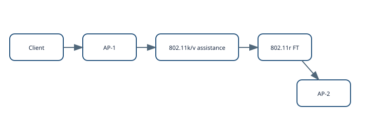
config wireless-controller vap
edit "Corp-Voice"
set ssid "Corp-Voice"
set security wpa2-only-enterprise
set 80211k enable
set 80211v enable
set fast-bss-transition enable
next
endshow wireless-controller vap Corp-Voice # Then validate a real roam with wireless client diagnostics / capture.
A voice handset stays attached to a distant AP until RSSI becomes poor, then the call suffers a long interruption. Enabling 802.11r alone may reduce authentication delay after the client moves but does not necessarily change when it decides to move. First verify the handset supports 802.11k/v, inspect the RF candidate environment and steering behavior, then measure the association/authentication gap. If the association moves quickly but the voice stream still breaks, investigate VLAN/IP continuity.
Treat roaming as a chain: RF design creates viable candidates; 802.11k/v help the station identify and choose them; 802.11r reduces the security-transition cost; the wired/tunnel design preserves network reachability. Test the actual critical client models because endpoint implementations vary substantially. After AP or handset firmware upgrades, repeat the mobility test because roaming behavior is a two-sided compatibility property.
The Persistent Agent provides a durable endpoint-to-FortiNAC control channel for authentication context, compliance scanning, messaging and posture-driven enforcement. Three states must be kept separate: the agent can be installed, it can be actively communicating, and it can be compliant. An installed agent with a broken TLS channel is not an operational agent; a communicating agent that fails posture is a different problem again.
FortiNAC documents several server-discovery sources, including DNS SRV records, lastConnectedServer, HomeServer and AllowedServers. Modern agents use secure TCP 4568 communication. Older documentation also lists UDP 4567, but current 9.4 release notes call out the transition away from UDP for newer agents. TCP 80 can be involved in upgrade workflows. Because the secure channel depends on certificate trust, an agent upgrade can expose a PKI problem even though IP reachability and switch-port visibility remain normal.
Lost Contact timing is not purely an agent heartbeat timer because FortiNAC also uses network-device polling to determine whether the host is still online. That prevents offline endpoints from being mistaken immediately for live hosts with broken agents, but it also means administrators must understand the polling dependency before tuning enforcement around contact loss.
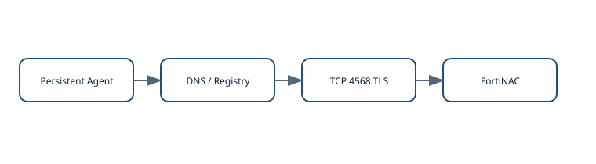
# DNS SRV examples _bradfordagent._udp.example.com. SRV 0 0 4567 nac.example.com. _bradfordagent._tcp.example.com. SRV 0 0 4568 nac.example.com. # Endpoint-side validation examples nslookup -type=SRV _bradfordagent._tcp.example.com openssl s_client -connect nac.example.com:4568 -servername nac.example.com
Endpoints stay online after an agent upgrade, but FortiNAC reports lost contact and functions such as compliance scan or Send Message stop working. Agent logs show certificate issuer validation failure. That narrows the fault to the secure agent channel: the switch port, DHCP and general network access can remain healthy. Fix the CA chain in the endpoint trust store, confirm TCP 4568 reachability, verify agent reconnection, then rerun a compliance scan and observe the host return to the intended access state.
Manage Persistent Agent communication as infrastructure: DNS, PKI, firewall rules, HA discovery and agent-version compatibility all deserve change control. Avoid overly aggressive lost-contact policy in mobile or WAN environments because transient connectivity can become unintended enforcement. Before a large agent rollout, validate a small ring of endpoints against the production certificate and discovery design.
Device Profiler classifies rogue endpoints by evaluating ordered rules against collected evidence. The key distinction is among Pass, Fail and Cannot Evaluate. Fail allows the engine to continue to a later rule; Pass classifies the device and stops the evaluation path; Cannot Evaluate means required evidence is missing and can prevent a later rule from ever being reached.
Rules can depend on OUI, DHCP fingerprints, open ports, HTTP responses, active scanning and FortiGuard IoT information. Rule order is therefore both a specificity problem and a data-availability problem. A broad rule ranked above a specific rule can consume endpoints too early. A highly specific rule that often lacks its required evidence can block unrelated endpoints with Cannot Evaluate. Automatic registration increases the consequence of a false positive because classification can immediately become a trust/access transition.
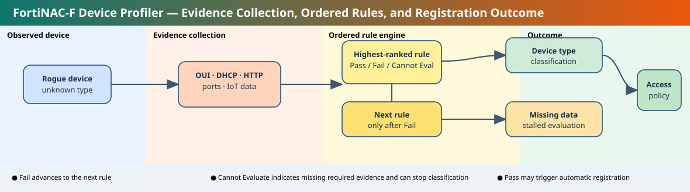
diagnose host device-profiling rules display all diagnose host device-profiling rules display name "Printer-Profile" diagnose host device-profiling rules scan mac 00:11:22:33:44:55 diagnose host device-profiling rules scan size diagnose host device-profiling host display rule-name -notes "Printer-Profile"
| Observation | Proves | Does not prove |
|---|---|---|
| Rule exists and is enabled. | The intended classifier is available to the engine. | Evaluation reaches that rule. |
| Missing Data/Cannot Evaluate appears on an earlier rule. | The engine lacks evidence required to decide that rule. | The later printer/IoT rule is wrong. |
New printers remain Rogue even though the printer rule is enabled. Events show Device Profiling Rule Missing Data on a higher-ranked rule. Because Cannot Evaluate interrupts the intended path, the printer rule never runs. Restore the missing DHCP/L3/active evidence or redesign the earlier rule/order, then rescan the MAC and verify the endpoint reaches the desired classification and registration policy.
Order high-confidence specific rules before broad fallbacks, but account for how reliably their evidence is collected. Alert on missing-data events so the profiler does not silently accumulate stalled Rogues. Use automatic registration only when the evidence is strong enough to justify immediate trust. Re-test rule order after FortiGuard/device-database or platform upgrades because the available classifications can evolve.
When FortiAuthenticator operates as a SAML Identity Provider, it authenticates the user and issues a signed assertion to a configured Service Provider. Successful IdP authentication proves that FortiAuthenticator accepted the user's identity. It does not prove that every SP trusts the signing certificate, accepts the audience/entity values, consumes the same NameID format, or maps the supplied groups into the intended role.
In an SP-initiated flow, the browser first reaches the application, receives a redirect/AuthnRequest to FortiAuthenticator, authenticates against the selected realm or user source, then returns a SAML response to the SP's Assertion Consumer Service URL. The SP validates the response and creates a session only if issuer, signature, audience and attribute policy are acceptable. In IdP-initiated access, the user starts at FortiAuthenticator and selects an authorized SP without a preceding SP AuthnRequest.
Entity IDs, ACS URLs, signing certificates, NameID format and group/attribute names form an integration contract. A certificate rollover or ACS change can break one SP while others continue to work. Realm selection is a separate dependency: a user may authenticate correctly but still be unauthorized for a particular SP.
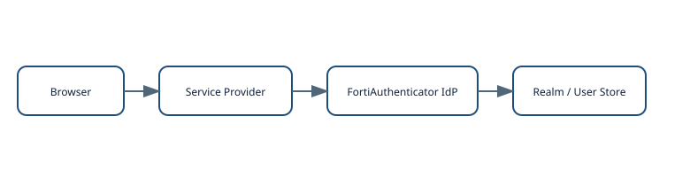
GUI: Authentication > SAML IdP > Service Providers Define / verify: - SP entity ID - Assertion Consumer Service (ACS) URL - IdP signing certificate - Realm / user source - NameID format - group / attribute mappings - SP authorization rules
Users authenticate to FortiAuthenticator but one FortiGate/ZTNA service rejects the SAML login while another SP works. That evidence weakens the LDAP/user-source hypothesis and moves the fault domain to the failing SP contract. Compare entity ID, ACS URL, signing-certificate trust, NameID and required group attributes. Prove FortiAuthenticator issued the assertion for the correct SP, then prove the SP accepted it and mapped the identity to the intended authorization.
Document each SP as a versioned trust contract and manage certificate rollover intentionally. Synchronize time. Restrict IdP portal visibility/authorization to the intended groups. Test SP-initiated and IdP-initiated paths separately if both are supported. Do not use a FortiAuthenticator “login successful” page as evidence that the downstream application granted the right role.
Checkout and approval solve different privileged-access problems. Checkout grants one user temporary exclusive ownership of a secret. Approval authorizes a request to launch/use that secret. A user can therefore be the checkout owner yet still lack launch authorization until the approval policy is satisfied. FortiPAM can also rotate the credential on check-in and run checkout/check-in scripts for just-in-time privilege workflows.
When Requires Checkout is enabled, Launch Secret is unavailable until checkout succeeds. The Checkout Status area then shows the current owner and remaining duration. Fortinet documents a default checkout duration of 30 minutes in the example workflow, with configurable limits. Renew Checkout can extend ownership subject to policy. Checkin Password Change can rotate the password as ownership ends. Approval tiers operate independently and can contain one or more reviewers. Revoke behavior depends on whether an approval is still in a revocable state and whether the tier is already complete.
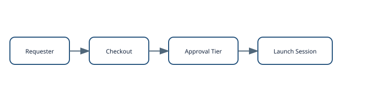
GUI: Secrets > Secrets > Create/Edit > Secret Setting Requires Checkout: Enabled Checkout Duration: 30 minutes (documented example/default) Checkin Password Change: enable where rotation is required Renew Checkout: optional Optional JIT automation: Secrets > Checkout/in Script Type: PowerShell or SSH Script Assign the reusable script to the relevant secret/policy.
An approver expects to revoke a just-approved request but Revoke is greyed out. The approval profile has only one approver in that tier, so the action completed the tier immediately. This is not a target-connectivity or credential problem; it is approval-state semantics. If the organization requires a revocable intermediate decision, redesign the approval tier and validate it with a test secret before using it for high-risk production accounts.
Use checkout where concurrent use would destroy accountability or conflict with rotation. Use approval where risk ownership must be explicit. Define emergency force-checkin/force-checkout behavior before an incident, especially when session recording and idle-time policy are enabled. Enable password change on check-in where the target supports reliable automated rotation. Test the exact release's approval/revoke behavior because the state model has evolved across versions.
A FortiSIEM parser is ordered executable normalization logic. XML validity is only the first gate. The correct parser must recognize the event before a broader parser does, extract the intended attributes, assign the intended event type, pass regression tests, be enabled, and then be Applied so the active parsing nodes receive the configuration.
Fortinet describes parser XML in terms of pattern definitions, an eventFormatRecognizer, and parsing instructions. Incoming logs are tested against parsers in top-to-bottom order. If a broad system parser recognizes a message before a custom parser, the custom parser does not get to normalize that message. Parser Test exists partly to detect this by comparing Expected Parser and Used Parser for stored test events. If no parser matches, FortiSIEM assigns Unknown_Event_Type.
Validate checks specification/XML correctness. Test checks behavior against sample events and parser ordering. Enable controls whether a parser is active. Apply distributes the parser configuration to the processing nodes. These are distinct states, which means “my XML validates” is far from equivalent to “production events are normalized correctly.”
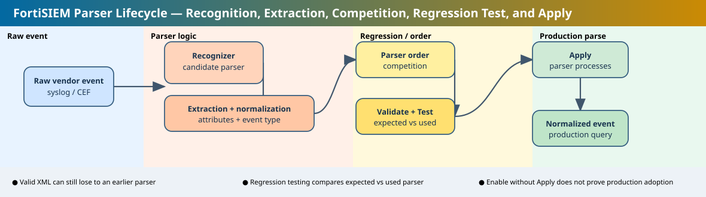
<eventFormatRecognizer> <!-- require a product-specific differentiator --> </eventFormatRecognizer> <parsingInstructions> <!-- extract normalized fields and assign event type --> </parsingInstructions> Admin > Device Support > Parsers Validate → Test → fix order if required → Enable → Apply
A new parser validates, but Apply fails. The failure references a parser that no longer exists in the GUI after an earlier content/update change. Rewriting the new parser does not repair the stale global dependency. Identify the failing Expected/Used Parser reference in the parser-test set, remove or repair the stale reference using Fortinet’s supported procedure, rerun the full parser regression set, then Apply and query new events to confirm the custom parser is actually used.
Build recognizers from product-specific tokens rather than generic syslog framing. Preserve positive and near-miss samples for every custom parser. Put specific parsers above broad catch-alls. Treat upgrades as parser-regression events because system parser content and ordering can change. Production readiness requires recognition, extraction, regression testing and Apply—not merely XML that compiles.
DEM is useful because it separates a remote user's path into distinct evidence domains: endpoint resource state, endpoint-to-PoP path, FortiSASE PoP behavior, PoP-to-SaaS path, and application reachability. A single “experience” score would hide those boundaries; DEM exposes enough segment data to decide whether the next owner should be endpoint engineering, local ISP, SASE operations or the application/SaaS team.
The DEM agent must be installed and Online for endpoint trace operations. Endpoint details expose resource and tunnel/management information. The Generate traceroute workflow selects a SaaS application and monitoring duration, then FortiSASE presents tabular and path-diagram results. The documented workflow notes that the first result is not instantaneous and that additional results arrive periodically while the job runs. An intermediate hop showing no response is not automatically a loss event because many routers suppress probe replies while still forwarding user traffic.
Path context matters. If the endpoint is using local internet breakout outside the FortiSASE tunnel, the PoP is not in that traffic path. Always interpret DEM against the actual tunnel/breakout state rather than assuming every remote-user session traverses a security PoP.
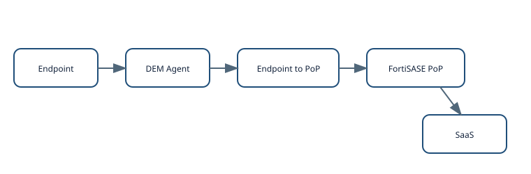
Operations > Connectivity > Endpoints Select endpoint > View Endpoint Details Digital Experience > Generate traceroute Select SaaS application Set Monitor for duration Start Prerequisite: DEM Agent Status = Online
Users in one region report slow SaaS. PoP-to-SaaS health is normal, endpoint CPU/memory are normal, but affected endpoints show elevated latency before they reach the FortiSASE PoP. That moves the fault domain toward the local access network/ISP. Compare a healthy endpoint on another ISP and examine end-to-end loss. Do not escalate to the SaaS provider because one intermediate trace hop suppresses replies.
Build DEM runbooks around segment ownership. Separate endpoint resource pressure from tunnel state, first-mile latency/loss and PoP-to-application health. Sample endpoints across ISPs and geographies rather than assuming one laptop represents an entire site. Because FortiSASE is cloud-delivered, use the current tenant release guide when fields or entitlement behavior change.
ADVPN 2.0 makes spoke-to-spoke shortcut formation an SD-WAN path-management decision. Hub reachability is only the baseline. Spokes discover remote edges, compare local and remote transport information, evaluate health, apply transport-group compatibility and the matching SD-WAN service policy, and only then establish the direct IPsec shortcut. This is why an IKE message saying no viable shortcut can indicate a path-selection problem rather than a cryptographic/IKE failure.
advpn-select enables the ADVPN 2.0 behavior on the SD-WAN zone and is documented as disabled by default. advpn-health-check names the health check whose state is shared for path decisions. Each SD-WAN member can carry a transport-group identifier from 1–255 so the fabric can distinguish classes such as Internet, MPLS or LTE. The SD-WAN service's shortcut-priority controls shortcut preference behavior. Multiple compatible shortcuts can be used when the service and available transports support it.
Transport groups must have consistent meaning across spokes. If Spoke A labels Internet as group 1 but Spoke B labels MPLS as group 1, the configuration is syntactically valid yet semantically wrong. Likewise, a transport can be present but out of SLA, leaving no mutually viable path even though both spokes independently reach the hub.
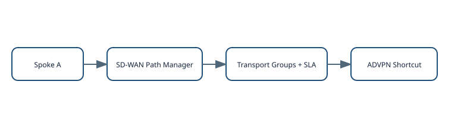
config system sdwan
config zone
edit "overlay"
set advpn-select enable
set advpn-health-check "overlay-sla"
next
end
config members
edit 1
set interface "overlay-internet"
set transport-group 1
next
edit 2
set interface "overlay-mpls"
set transport-group 2
next
end
config service
edit 10
set name "east-west"
set shortcut-priority auto
next
end
endshow system sdwan diagnose sys sdwan service diagnose vpn ike gateway list diagnose vpn tunnel list
advpn-select enable and the intended health check; members show the intended transport-group IDs; the service includes shortcut-priority behavior. During spoke-to-spoke traffic, the SD-WAN service should identify a viable shortcut path and IPsec diagnostics should show a dynamic direct tunnel when local/remote transports and SLA states are compatible. Peer addresses, RTT/loss, tunnel names and SPIs vary.Spoke-to-spoke traffic remains on the hub and IKE debug reports no viable shortcut. Since both spokes reach the hub, basic overlay connectivity is healthy. Compare the local/remote parent overlays, transport-group semantics, health/SLA state and the SD-WAN rule matching that traffic. A mismatch can make every direct combination ineligible while leaving the hub path completely functional.
Assign transport groups by connectivity class, not by local interface number. During migration from ADVPN 1.0, test every intended transport combination and every important SD-WAN service. Fortinet currently documents ADVPN 2.0 with IPv4 scope, so do not assume equivalent IPv6 shortcut behavior without release-specific confirmation. Treat the path-manager decision as the first diagnostic layer and IKE tunnel construction as the second.
Questions cover only today's 12 lessons. Each card is present in static HTML; JavaScript only grades the already-rendered cards.
Both IPsec members show IKE up, but only one can be added to the aggregate. Which check best follows today's lesson?
Weighted round robin is configured. What is the correct interpretation?
Which output most directly proves both members are referenced by the aggregate?
When is redundant mode preferable?
An ADOM is locked but Import Policy is still unavailable in workflow mode. What state is missing?
Which CLI enables workflow workspace mode globally?
A saved session exists. Why can another new workflow session be blocked?
What does approval prove?
A matching log exists only in Archive. What does that mean for an event handler?
Basic-handler rules have what relationship?
Which object scopes devices/subnets/log filters for handlers?
A handler is enabled but no events occur. What should be proven before rewriting logic?
Can two hosts on the same isolated secondary VLAN communicate directly?
What normally connects to a promiscuous PVLAN port?
A model does not support PVLAN standalone. Will FortiLink management create the missing forwarding feature?
Which design may be cleaner when groups need separate firewall policy and broadcast domains?
Which amendment mainly accelerates security handoff after the client chooses to roam?
A sticky client roams too late. Why is enabling 802.11r alone insufficient?
What does 802.11k primarily provide?
Association moves quickly but voice still drops. What boundary is next?
An agent is installed but TLS 4568 fails. Which statement is correct?
Which modern port is central to secure Persistent Agent communication?
After an agent upgrade, contact is lost and certificate validation fails. Best remediation?
Why can Lost Contact timing depend on network-device polling?
What happens when an earlier profiling rule returns Cannot Evaluate because required data is missing?
Which command displays all Device Profiling Rules?
Why can a broad high-ranked rule be dangerous?
Automatic registration should be used when?
User authentication succeeds at FortiAuthenticator but one SP rejects SAML while another SP works. Leading fault domain?
What does successful IdP authentication not prove?
Which parameter is part of the SP trust contract?
During certificate rollover, what must be coordinated?
What does checkout establish?
A secret is checked out but launch is unavailable. What additional gate may still be pending?
Why can Revoke be unavailable after a single approver acts?
What is a benefit of Checkin Password Change?
A custom parser validates but events use an earlier generic parser. What is the likely issue?
What is the purpose of Apply?
Apply fails because test data references a removed parser. Best correction?
If no parser matches, what event type is used?
DEM shows normal endpoint CPU/memory and normal PoP-to-SaaS, but high endpoint-to-PoP latency. Leading domain?
What prerequisite is required to run endpoint trace jobs?
An intermediate traceroute hop shows ***. What is the safest conclusion?
A user uses local internet breakout. How should PoP metrics be interpreted?
Both spokes reach the hub, but no ADVPN 2.0 shortcut forms. What should be compared first?
What does transport-group represent?
What does “no viable shortcut” primarily indicate in today's model?
Why should transport-group IDs be semantically consistent across spokes?
FortiNAC-F correctly classifies an endpoint, but FortiSIEM uses the wrong parser for its logs. Which reasoning is correct?
FortiSASE DEM shows endpoint and endpoint-to-PoP health are normal, but a private application slows only when ADVPN 2.0 selects one shortcut. Where should you focus?
| Check | Expected |
|---|---|
| Static lesson containers | 12 |
| Static question containers | 50 |
| Check Answer buttons | 50 |
| Mermaid scripts/blocks | 0 |
| SVG diagram references | 12 |
| draw.io editable-source links | 12 |
| Expected-state/output sections | 12 |